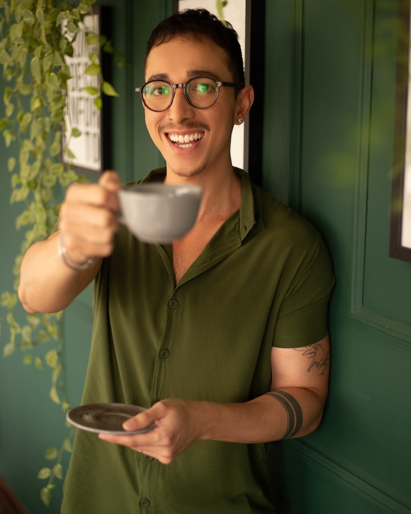
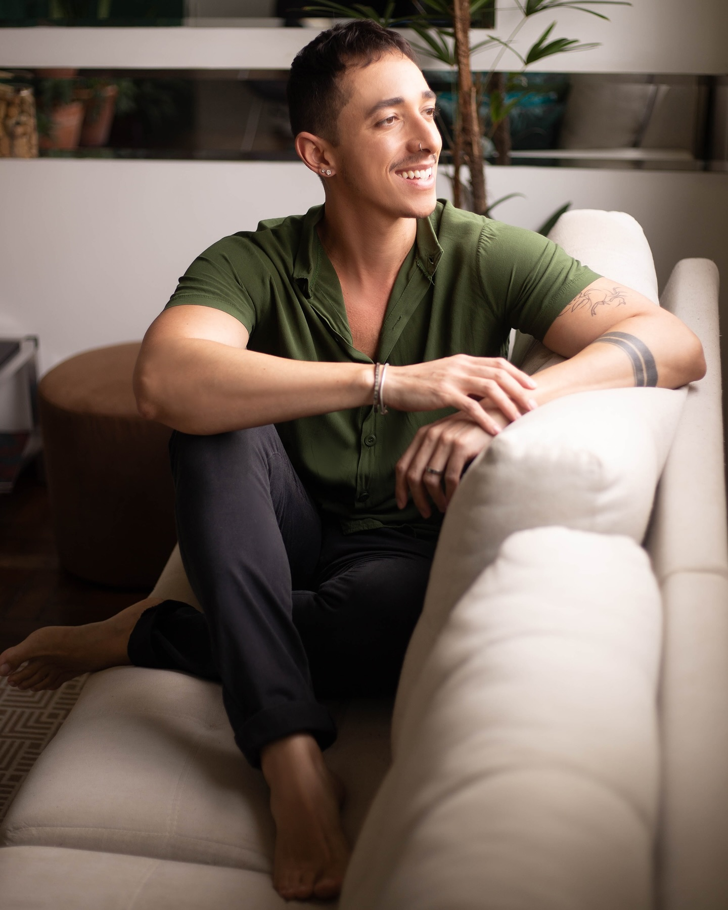
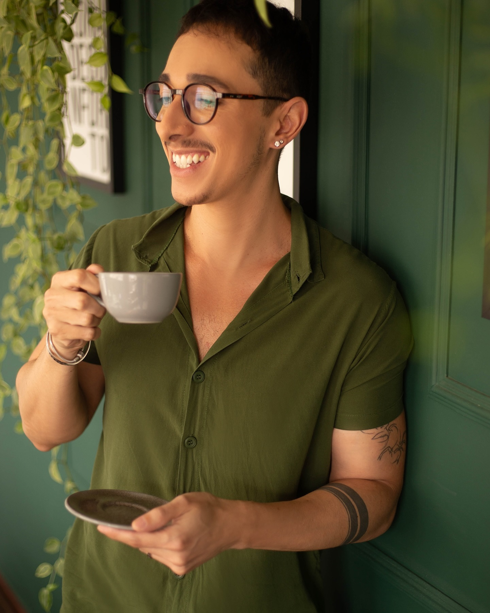
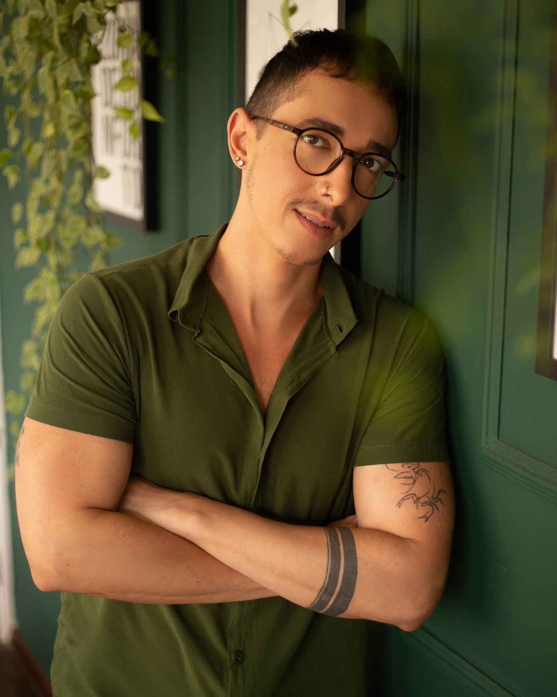
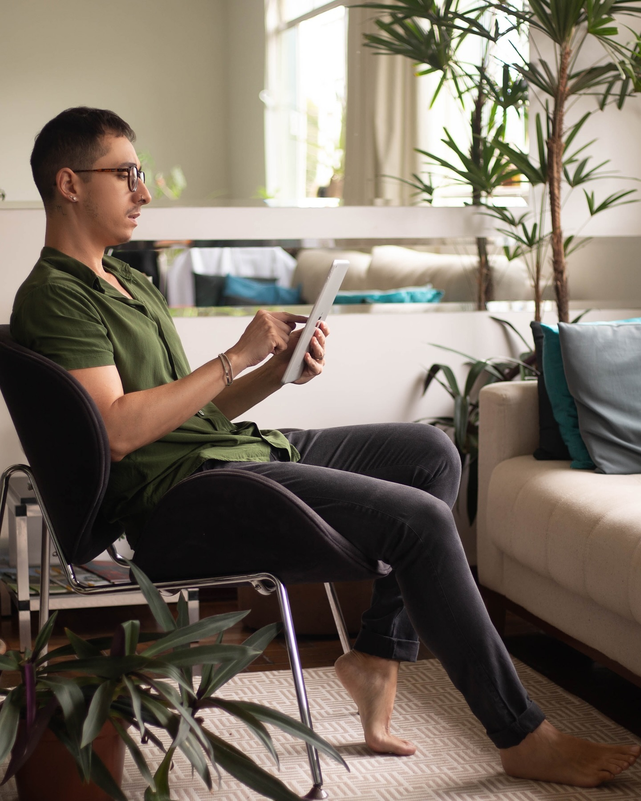
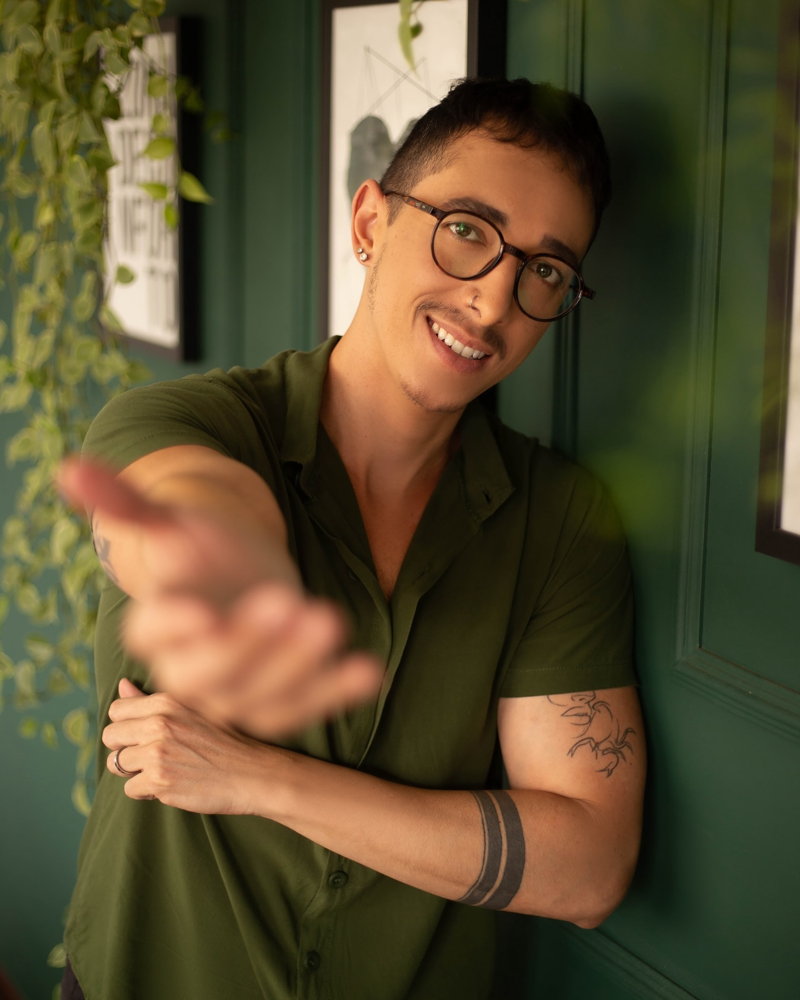

Acolhimento de verdade
Receber bem e estar pronto pra ouvir. A sessão começa antes da técnica: começa em você se sentir em casa, no sofá, do seu jeito.
Receber bem e estar pronto pra te ouvir — e se for acompanhado de um bom cafezinho, melhor ainda. Aqui você conversa sobre o que precisa ser ouvido, sem nenhum risco de julgamento.



“Tenho um compromisso diário com a empatia, a compreensão e o bem-estar emocional de cada pessoa que senta nesse sofá.”
Meu objetivo é ajudar a construir pontes entre o sofrimento e a esperança, entre a confusão e o entendimento. Uma das coisas que as pessoas mais temem é ser julgadas — e uma das que menos se exerce hoje é a empatia. Vamos fazer diferente, juntos?
O Café com Terapia nasceu dessa ideia simples: psicoterapia séria, em um espaço acolhedor de verdade, onde a conversa começa como entre amigos — com um café quentinho — e se aprofunda com técnica e cuidado.
Receber bem e estar pronto pra ouvir. A sessão começa antes da técnica: começa em você se sentir em casa, no sofá, do seu jeito.
Quer conversar com alguém sem nenhum risco de ser julgado? Aqui a empatia não é discurso — é o método de trabalho, todos os dias.
“O café não está só no nome” — palavra de paciente. O cafezinho é o nosso ritual de chegada: aquece a mão e destrava a conversa.
Através do autoconhecimento adquirido no processo psicoterapêutico, você se capacita pra lidar com os desafios do dia a dia com mais assertividade — antes que eles virem emergência.
Ao contrário de um investimento financeiro, o tempo perdido é irreversível. Na terapia, você aprende a usá-lo — e não gastá-lo — com o que te enriquece de momentos e sentimentos bons.
Muitas vezes colocamos em nós uma pressão excessiva pra agradar os outros. Aqui trabalhamos autoestima e estratégias pra estabelecer limites saudáveis nas relações.
A intuição é uma percepção que nasce das suas experiências e emoções. No processo terapêutico, você aprende a dar a devida atenção ao que ela diz.
“Posso dizer com toda certeza que foi uma das melhores decisões da minha vida! Um profissional excepcional, dedicado e de uma humanidade inigualável.”
“Sem palavras para descrever como mudou minha vida! A terapia salva vidas — e quando vem o combo com profissional nota 1000, melhor ainda.”
“Foi meu presente de aniversário: encontrei equilíbrio e compreensão pra lidar com os acontecimentos da série que é a minha vida.”
“Ambiente confortável, acolhedor… e o café não está só no nome, hahaha!”
“Profissional que te deixa à vontade — e com isso o desejo da terapia cresce, proporcionando um autoconhecimento significativo pra lidar com os problemas.”
“Atendimento especializado em um ambiente muito aconchegante e confortável! Super indico!”
“Excelente profissional, muito ético — te ajuda a se encontrar com você mesmo. Super recomendo.”
“Excelente atendimento! Profissional incrível e um ambiente totalmente acolhedor. Eu recomendo de olhos fechados!”
“Profissional sensacional. Receptivo e demonstra muito cuidado com as pessoas. Super recomendo.”
“Consultório aconchegante e com um excelente profissional para o atendimento. Super indico.”
“Muito aconchegante, psicólogo prestativo — sei que vai ser muito útil no meu caminho.”
“Gente, é tudo de bom: a atenção, a recepção e profissionalismo demais. Recomendo!”




O Café com Terapia agora está em um espaço ainda mais acolhedor pra cuidar de você e da sua saúde mental.
Rua Jovita Cardoso Tagliaferri, 217
Vila Augusto Ribeiro · Campo Belo – MG · 37270-000
Venha conversar sobre aquilo que você precisa que alguém te ouça — e te ajude. Autoconhecimento e bem-estar começam com um primeiro passo (e um cafezinho).